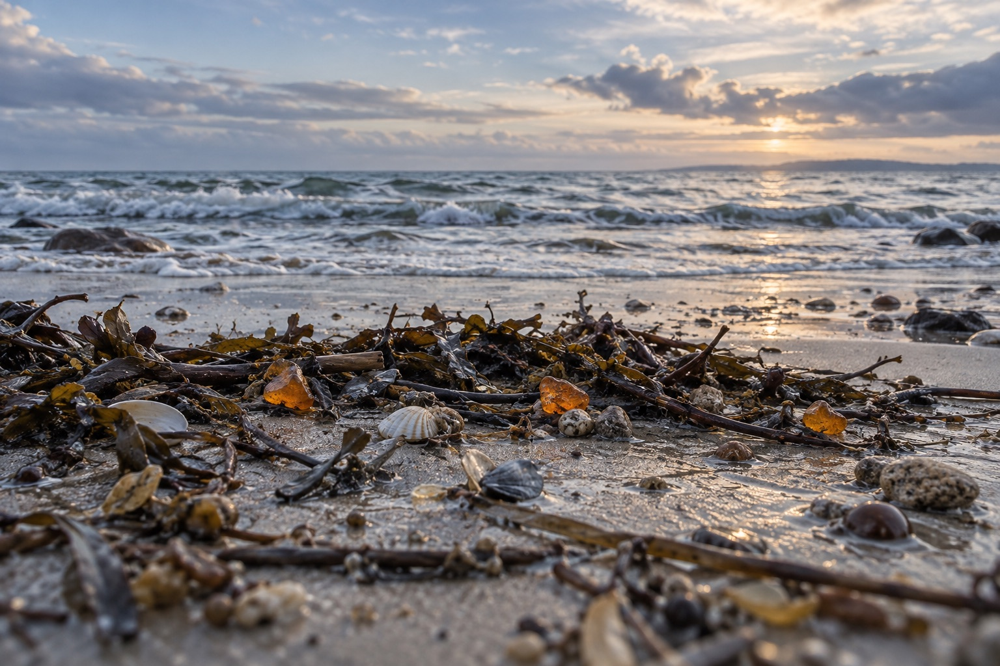

Балтийский берег · после шторма
Шторм прошёл.
За янтарём?
Где искать янтарь в Калининградской области — и как выбрать время, когда на берег уже можно выйти.
Выбрать берег и день
Ваша прогулка
После какого шторма едем?
Отметьте день и выберите берег. Перед выходом проверим море и путь обратно.
Не секретная точка. Ваш берег.
Где искать янтарь после шторма
Начните с доступного пляжа рядом с вами. Долгая дорога не делает находку вероятнее.
01 Широкий курортный берег
Янтарный
Начните с центрального пляжа и знакомого оборудованного выхода. Прогулку легко оставить короткой: осмотрели выбросы — вернулись тем же путём.
Выход и возвращение
Оборудованный выход к центральному пляжу. После шторма осмотрите сам спуск: обычный проход может быть повреждён.
Возвращайтесь к тому же выходу, оставив время на дорогу из посёлка.
Источник о берегах ↓02 Море рядом с городом
Зеленоградск
Удобен, если вы уже живёте в Зеленоградске: можно проверить берег без отдельной поездки через область. Ищите доступный участок песка у официального спуска.
Выход и возвращение
Спуск с городского променада на открытый участок пляжа. Не заходите на пирс и волнорезы ради выбросов.
Вернитесь на променад тем же спуском; пауза в городе не зависит от находок.
Источник о берегах ↓03 Прогулка от променада
Светлогорск
Сначала оцените, осталась ли сухая пляжная полоса. Если вода подходит к променаду, оставьте поиск и гуляйте выше, по разрешённому маршруту.
Выход и возвращение
Только открытый оборудованный спуск. Не спускайтесь по береговому склону.
На обратный подъём и дорогу в город нужен отдельный запас времени.
Источник о берегах ↓04 Короткий выход к морю
Пионерский
Подойдёт для отдельной небольшой прогулки по доступному городскому берегу. Наличие выбросов проверяют на месте: тихий пляж сам по себе ничего не обещает.
Выход и возвращение
Оборудованный городской выход. Не заходите в порт и на закрытые сооружения.
Оставьте обратный путь в пределах знакомого участка берега.
Источник о берегах ↓05 Берег без переправы
Балтийск
Для короткого поиска выбирайте доступный морской пляж на городской стороне. Поездка на Балтийскую косу — отдельный сценарий с переправой.
Выход и возвращение
Публичный выход на городской морской пляж; портовые и ограждённые участки обходите.
Если возвращаетесь в Калининград, заранее проверьте свой рейс.
Источник о берегах ↓06 Море и паром
Балтийская коса
Выбирайте косу, когда переправа работает и известен обратный рейс. После шторма поездка через пролив требует отдельной проверки у перевозчика.
Выход и возвращение
Открытый проход к морскому берегу со стороны посёлка. Не идите к руинам и закрытым объектам ради поиска.
До выхода на пляж определите обратный паром. Не рассчитывайте на последний рейс как на запасной.
Источник о берегах ↓07 Берег национального парка
Куршская коса
Поиск можно совместить с разрешённой прогулкой к морю. Коса не означает гарантированный выброс: главное здесь — доступный берег и соблюдение режима парка.
Выход и возвращение
Только обозначенный выход к морю. По дюнам и береговому валу вне настилов не ходим.
Заранее проверьте автобус обратно или путь к своей машине.
Источник о берегах ↓Медленно, внимательно, по сухому берегу
Три шага к своей находке
- 01
Посмотрите на море
Сильная волна ещё доходит до прохода? Поиск откладываем. Пирс, волнорез и вода не нужны для этой прогулки.
- 02
Читайте линию выбросов
На сухом песке остаются водоросли, ракушки и веточки. Осматривайте их взглядом небольшими участками. Раскапывать берег и подниматься на дюны не нужно.
- 03
Оставьте время на возвращение
Развернитесь до того, как устанете. Если выбросов нет, прогулка всё равно состоялась — продолжите день в городе.
Что лежит на песке
Янтарь бывает
не только золотым
Ископаемая смола может быть прозрачной, облачной или непрозрачной, с тёмной коркой. Один цвет и одно свечение не дают надёжного ответа.
Сравните находку с музейными образцами. Не пробуйте неизвестный предмет огнём, горячей иглой или на вкус.
Посмотреть настоящие образцы в Музее янтаря ↗С собой, без лишнего
Короткий список
для длинного берега
- Прогноз и предупреждения МЧС на день прогулки
- Открытый спуск и сухой путь назад
- Тёплая непромокаемая одежда и обувь
- Заряженный телефон и обратный транспорт
- Пакет для мусора; неизвестные предметы не трогаем
По делу
Вопросы перед выходом
Когда искать янтарь после шторма?
Когда сильная волна отступила, выход на пляж открыт и есть сухой путь обратно. Утро удобно для прогулки при дневном свете. Само слово «после» не означает, что море уже спокойно; фиксированного числа часов до удачного выброса нет.
Источник ↓Нужно ли ждать отлива на Балтике?
Выраженного морского отлива, по которому удобно составить расписание поиска, здесь нет: приливы и отливы слабы. Оценивайте ветер, волну и фактическую ширину сухого берега.
Источник ↓Где искать янтарь в Калининградской области?
Для первой прогулки сравните Янтарный, Зеленоградск, Светлогорск, Пионерский и Балтийск. На обе косы едут с учётом их логистики и правил. Выбирайте доступный берег рядом с вашей базой; постоянных точек, где янтарь лежит каждый раз, эта страница не обещает.
Источник ↓Где смотреть на самом пляже?
Осматривайте оставшуюся на сухом песке линию выбросов: водоросли, мелкие веточки и ракушки. Это способ организовать поиск взглядом, а не доказательство, что в каждом таком скоплении есть янтарь. В воду за находкой не заходим.
Источник ↓Как отличить янтарь от обычного камня?
Янтарь — ископаемая смола. Он бывает прозрачным, мутным и непрозрачным; цвет не ограничивается медово-жёлтым. По одному фото надёжно определить неизвестную находку нельзя. Для сравнения используйте образцы Музея янтаря; не пробуйте камень огнём, горячей иглой или на вкус.
Источник ↓Поможет ли ультрафиолетовый фонарик?
Янтарь может люминесцировать под ультрафиолетом, но свечение само по себе не подтверждает подлинность и безопасность находки. Ночной выход усложняет оценку волн, спусков и пути назад. Для первой прогулки выбирайте дневной свет.
Источник ↓Можно ли собирать янтарь на берегу?
Не смешивайте осмотр выброшенных на поверхность кусочков с добычей. КоАП РФ предусматривает ответственность за самовольную добычу янтаря и оборот незаконно добытого сырья. Нельзя считать любую находку или любой пляж автоматически разрешёнными: учитывайте режим территории. Раскапывать берег или заходить в промышленные зоны ради поиска не нужно.
Источник ↓Почему не стоит искать в дюнах?
На Куршской косе хождение по дюнам и переход через береговой вал вне установленных проходов нарушают правила парка. Поиск остаётся на доступном пляже; песчаные склоны и растительность не тревожим.
Источник ↓Что делать с подозрительной находкой?
Не кладите неизвестный предмет в карман и не нагревайте его. На немецких пляжах Балтики описаны случаи находок белого фосфора, похожего на янтарь; это не данные о частоте таких случаев здесь. Если предмет дымит или похож на боеприпас — отойдите, не подпускайте других и звоните 112.
Источник ↓Шторм закончился, а выбросов нет. Куда дальше?
Оставьте поиск короткой прогулкой: маршрут не должен зависеть от находки. Можно продолжить день в выбранном прибрежном городе или посетить Музей янтаря в Калининграде. Проверяйте режим посещения музея на его сайте.
Источник ↓Источники и дата проверки
Редакция GoDune.ru · проверено 9 октября 2026 года. Рекомендации по организации прогулки — редакционные; прогноз погоды и факт сегодняшнего шторма автоматически не загружаются.
- Инфоцентр туризма Калининградской области · пляжи
География и характер курортных берегов; не прогноз находок.
- Администрация Янтарного · Балтийское море
Приливы и отливы на балтийском побережье выражены слабо.
- Музей янтаря · происхождение
Янтарь — ископаемая смола; происхождение балтийского янтаря.
- Музей янтаря · свойства
Формы, окраска и прозрачность янтаря.
- Музей янтаря · янтарь и его имитации
Диагностика, люминесценция и ограничения визуального определения.
- МЧС Калининградской области · поведение на море
Сильная волна и морские течения опасны. Это общие рекомендации 2021 года, не сегодняшнее предупреждение.
- Национальный парк «Куршская коса» · правила на дюнах
Не ходить по дюнам и не пересекать береговой вал вне установленных проходов.
- Земля Шлезвиг-Гольштейн · фосфор на пляже
Документированный риск на немецких пляжах Балтики: внешнее сходство фосфора с янтарём. Не статистика находок в Калининградской области.
- КоАП РФ · статья 7.5
Текст нормы о самовольной добыче и обороте незаконно добытого янтаря; не индивидуальное разрешение на сбор.
- Музей янтаря · вопросы посетителей
Музей как альтернатива береговой прогулке; часы здесь не копируются.